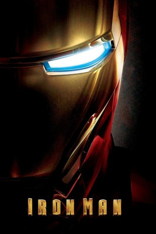

#723 Iron Man 1
Auszeichnungen: für 2 Oscars nominiert
 gesehen am 18.03.2015
gesehen am 18.03.2015
 
 IMDB-Wertung: 7.9 / 10
IMDB-Wertung: 7.9 / 10  Metascore: 79
Metascore: 79 
Der Großindustrielle und Erfinder Tony Stark weiß zu leben: Als Milliardär liegen ihm die Frauen zu Füßen, er feiert Partys im Privatjet und verspielt Riesensummen im Casino, während seine Rüstungsfirma unter Obadiah Stane Rekordumsätze erzielt. Bei einem Waffentestlauf in Afghanistan wird er jedoch Opfer eines Bombenanschlags. Stark überlebt schwer verletzt und wird von einer Gruppe Aufständischer unter Führung des Warlords Raza dazu gezwungen, eine Superwaffe zu entwickeln. Es gelingt ihm jedoch, heimlich eine eiserne Schutzrüstung zu bauen, die ihn dank neuster Technologie zu Superkräften befähigt. Nach einer spektakulären Flucht zurück in die USA muss sich der Iron Man allerdings einem ersten übermächtigen Gegner stellen.
Jahr: 2008
Dauer: 126 Minuten
FSK: 12
Land: USA Studio: Paramount PicturesTonspuren: DTS - ,
Untertitel: Deutsch,
Auflösung: 1080p (1920x800) Größe: 10649 MB
Genre: Action, Abenteuer, Sci-Fi
Regisseur:  Jon Favreau
Jon Favreau
Drehbuch: Mark Fergus, Hawk Ostby, Art Marcum, Matt Holloway, Stan Lee
Soundtrack: Ramin Djawadi
Darsteller:
 Robert Downey Jr. als Tony Stark / Iron Man
Robert Downey Jr. als Tony Stark / Iron Man Terrence Howard als Rhodey
Terrence Howard als Rhodey Jeff Bridges als Obadiah Stane
Jeff Bridges als Obadiah Stane Gwyneth Paltrow als Pepper Potts
Gwyneth Paltrow als Pepper Potts Leslie Bibb als Christine Everhart
Leslie Bibb als Christine Everhart Shaun Toub als Yinsen
Shaun Toub als Yinsen Faran Tahir als Raza
Faran Tahir als Raza Clark Gregg als Agent Coulson
Clark Gregg als Agent Coulson Bill Smitrovich als General Gabriel
Bill Smitrovich als General Gabriel Sayed Badreya als Abu Bakaar
Sayed Badreya als Abu Bakaar Paul Bettany als Jarvis
Paul Bettany als Jarvis Jon Favreau als Hogan
Jon Favreau als Hogan Peter Billingsley als William Ginter Riva
Peter Billingsley als William Ginter Riva Tim Guinee als Major Allen
Tim Guinee als Major Allen Will Lyman als Award Ceremony Narrator
Will Lyman als Award Ceremony Narrator- Tom Morello als Guard
 Marco Khan als Guard
Marco Khan als Guard- Daston Kalili als Guard
- Ido Mor als Guard
 Kevin Foster als Jimmy
Kevin Foster als Jimmy- Ahmed Ahmed als Ahmed
 Fahim Fazli als Omar
Fahim Fazli als Omar- Gerard Sanders als Howard Stark
 Nazanin Boniadi als Amira Ahmed
Nazanin Boniadi als Amira Ahmed- Stacy Stas Hurst als Woman at Craps Table
- Marvin Jordan als Air Force Officer
- Ava Rose Williams als Kid in SUV
- Callie Croughwell als Kid in SUV
- Sahar Bibiyan als Gulmira Mom
- Patrick O'Connell als Reporter
- Adam Harrington als Reporter
- Meera Simhan als Reporter
- Ben Newmark als Reporter
- Ricki Lander als Flight Attendant
- Jeannine Kaspar als Flight Attendant
 Stan Lee als Stan Lee
Stan Lee als Stan Lee- Zorianna Kit als Zorianna Kit
- Lana Kinnear als Stan's Girl
- Gabrielle Tuite als Stan's Girl
 Tim Griffin als CAOC Analyst
Tim Griffin als CAOC Analyst Joshua Harto als CAOC Analyst
Joshua Harto als CAOC Analyst Micah Hauptman als CAOC Analyst
Micah Hauptman als CAOC Analyst- Vianessa Castaños als Fireman's Wife , uncredited
 Mike Cochrane als Gulmira Villager , uncredited
Mike Cochrane als Gulmira Villager , uncredited- Crystal Marie Denha als Dubai Beauty , uncredited
- Yonel Dorelis als Himself - USAF Helicopter Pilot , uncredited
- Mellany Gandara als Dubai Girl , uncredited
 Samuel L. Jackson als Nick Fury , uncredited
Samuel L. Jackson als Nick Fury , uncredited- Laura Liguori als Dancer in Ballroom , uncredited
- Flavia Manes Rossi als Reporter , uncredited
Datei: X:\Comic-Filme\Iron Man\Iron Man 1 (2008, FSK12, 1920x800).mkv seit 16.03.2015
Festplatte: Comicverfilmungen+MusikCD
 Es gibt insgesamt 7 Filme in der Gruppe 'Comic-Filme\Iron Man'
Es gibt insgesamt 7 Filme in der Gruppe 'Comic-Filme\Iron Man'